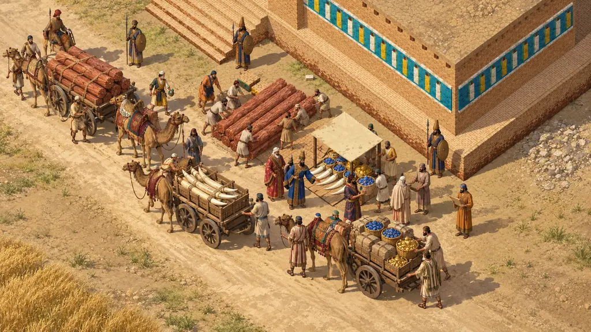
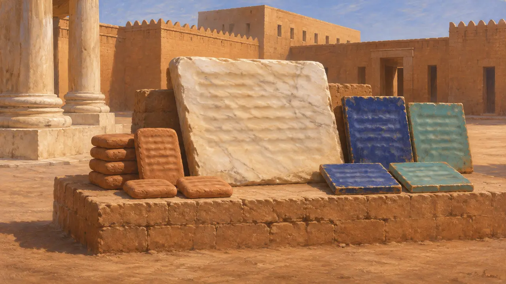
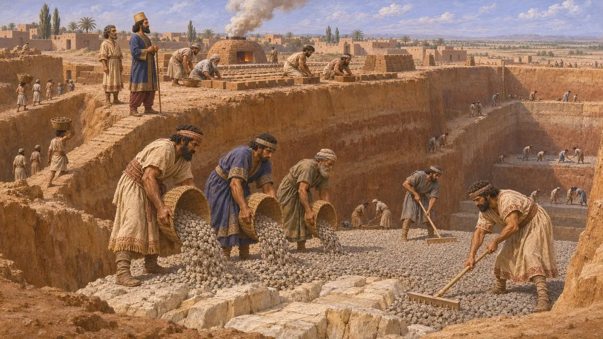
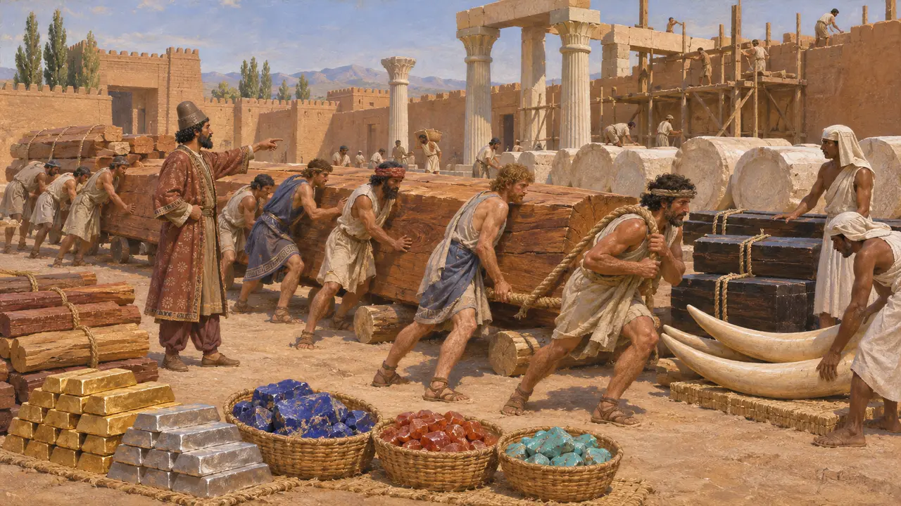
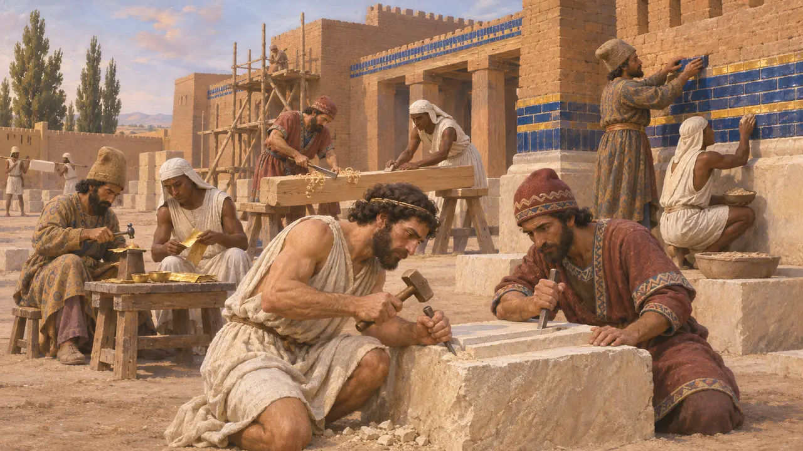
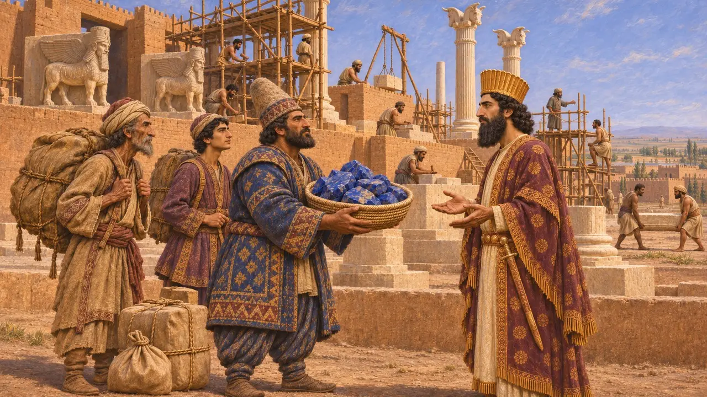

Enciclopédia › Batalhas e eventos

A Carta de Susa de Dario
A inscrição de construção de Dario I para o seu palácio em Susa, provavelmente do final do século VI AEC
No jogo: Nível 5: A Carta
A Carta de Susa de Dario (DSf) é uma inscrição de construção em persa antigo, elamita e babilônico que registra como foi feito o seu palácio em Susa. Ela nomeia as terras que enviaram madeira, ouro, pedra e marfim e os povos que os trabalharam. É o retrato mais completo que Dario deixou de todo o império trabalhando em um único projeto real.
No jogo: O jogo trata a Carta como um decreto de cerca de 517 AEC e constrói a fase de Susa em torno do palácio. Na verdade, DSf é um registro de construção, não uma ordem, e sua data não é conhecida; 517 AEC é uma aproximação.

Cópias em argila, pedra e azulejo vidrado
Nos registrosEscavadores franceses em Susa começaram a recuperar cópias e fragmentos do texto no fim da década de 1920, e escavações posteriores acrescentaram outros. As cópias foram escritas em tabletes de argila, placas de mármore e ladrilhos vidrados, nas três línguas reais: persa antigo, elamita e babilônico. Uma versão muito próxima, conhecida como DSz, repete grande parte do mesmo conteúdo.
DSf; DSz; J. Perrot (ed.), The Palace of Darius at Susa, 2013

Escavando até a rocha
Nos registrosDario diz que a terra foi escavada até se alcançar a rocha. O fosso foi então preenchido com cascalho, em alguns pontos com 40 côvados de profundidade e em outros com 20, e o palácio foi erguido sobre ele. Babilônios moldaram e cozeram os tijolos. O texto também afirma que seu pai, Histaspes, e seu avô, Arsames, ainda viviam quando Ahuramazda o fez rei.
DSf

Materiais vindos dos confins do império
Nos registrosO cedro vinha da montanha chamada Líbano: os assírios o levavam até a Babilônia, e cários e jônios o transportavam daí até Susa. A madeira yaka vinha de Gandara e da Carmânia, o ouro de Sardes e da Báctria, e o lápis-lazúli e a cornalina da Sogdiana. A turquesa vinha da Corásmia, a prata e o ébano do Egito, e o marfim de Cuxe, da Índia e da Aracósia. As colunas de pedra eram talhadas em uma aldeia chamada Abiradu, em Elam.
DSf

Os artesãos que os trabalharam
Nos registrosA carta diz que os cortadores de pedra eram jônios e sardianos. Os ourives eram medos e egípcios, os marceneiros, sardianos e egípcios, e os homens que decoraram as paredes, medos e egípcios. As tabuletas das Fortificações de Persépolis registram rações para trabalhadores de muitas terras, entre eles egípcios, jônios e sardianos, o que mostra que grupos de trabalho mistos serviam nos projetos do Rei também na Pérsis.
DSf; Persepolis Fortification tablets

Data e propósito
DisputadoA carta não traz data: alguns historiadores associam a construção aos anos imediatamente posteriores às revoltas elamitas de 522-519 AEC, enquanto outros a situam mais tarde no reinado. Os estudiosos também debatem o quanto a lista deve ser tomada ao pé da letra, pois ela pode refletir rotas de suprimento reais, mas está organizada, como as listas de terras em Behistun e em Naqsh-e Rostam, para mostrar todos os cantos do império a serviço do Rei. O lápis-lazúli, por exemplo, provavelmente era extraído em Badakhshan e pode ter chegado a Susa pela Sogdiana.
P. Briant, From Cyrus to Alexander, 2002; A. Kuhrt, The Persian Empire, 2007
Fontes
- DSf
- A. Kuhrt, The Persian Empire: A Corpus of Sources from the Achaemenid Period, 2007
- R. G. Kent, Old Persian: Grammar, Texts, Lexicon, 1953
- J. Perrot (ed.), The Palace of Darius at Susa, 2013
- P. Briant, From Cyrus to Alexander, 2002
- P. Lecoq, Les inscriptions de la Perse achéménide, 1997